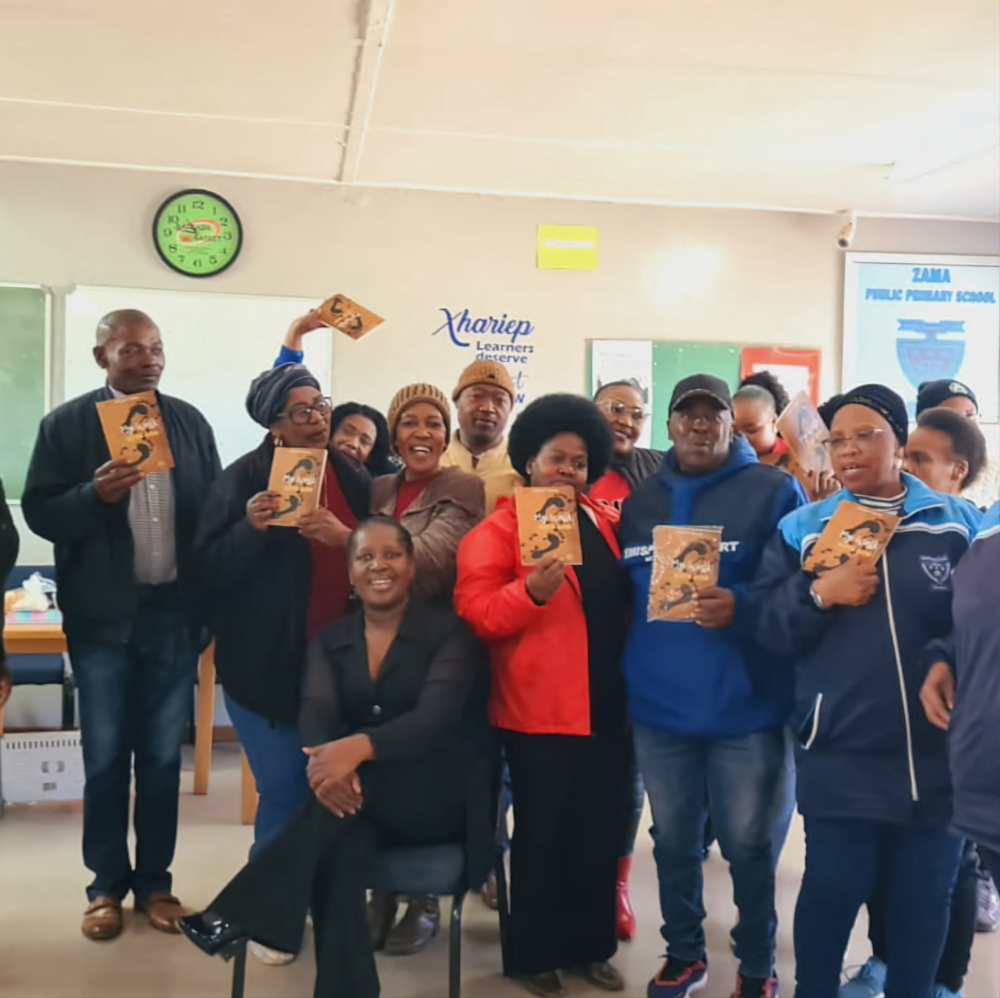

Keneilwe Tsieane
You want to have conscious access to the origins of your emotions...
...so you could be able to influence or motivate them effectively.
You want to have strong mental health, and sense of self-worth, without the need for validation from others.
You wish you had tools that could help you handle life, regardless of the cards you are dealt.
You want to detach yourself from your emotional pull
Although you'd like to govern your actions through reason and thought, you realise,
what most often dictates your behavior is the emotion you feel in the moment.
In looking back on an unpleasant or disagreeable experience, the thought
inevitably occurs to you: if only I had said or done x instead of y, if only I could do it over.
You need someone who can help you reduce the impact of those thoughts on your daily life,
so you could focus more on the present moment, and see your past as a learning experience.
Internal Discipline
We are all humans, and sometimes life will throw some unfortunate events at us,
and we are still going to make some mistakes along the way. What best equips
you to cope with these difficult situations is neither more knowledge nor more intellect.
What makes your mind stronger, and more able to control your emotions,
is internal discipline and toughness, and my book, "My walk with God" will guide you through out this process.
Hi I'm Keneilwe.
As an accomplished educator and author, I empower students, educators and my readers with insights and practical solutions so they can be their best selves and thrive.
In my years of teaching, I have encountered a wide range of personalities, leading me to recognise that people are different. They have different problems, different families, and cultures, and therefore react differently to circumstances.
Through my constant interaction with them, I developed an ability to see what their strengths are and what makes them unique. I enjoy guiding them to forge their own route in this life, a route that suits their own spirit and rhythms that lead to self discovery.
And this could be you, my book can help you manage your thought patterns, heal, empathise with others
and motivate/influence them more effectively.
I was always concerned about student engagement in class.
"Receiving advice from Keneilwe has been a game-changer for me in the world of education. Her sage counsel and strategic
insights has paved the way for better classroom dynamics and enhanced student engagement.
Keneilwe stressed the importance of empathy, patience, and innovative teaching methods,
which reshaped my approach to education.
Her words continue to resonate, reminding me daily to
prioritize not only knowledge transfer but also fostering a genuine connection with each student.
I'm thankful for her wisdom and the positive impact it has had on my teaching career."
-Mfundo M
30 years of teaching and beyond
I am a highly accomplished and experienced educator with over 30 years of teaching experience,
including serving as a High School Deputy Principal.
I have also worked as an education specialist
for the Department of Education in the Eastern Cape, where I was responsible for developing and
implementing educational programs and initiatives aimed at improving student outcomes.
Empowering educators from classroom to conference room
Currently, I facilitate motivational sessions for professionals in education,
sharing my knowledge and experience to help others develop the skills, knowledge,
and motivation they need to succeed in their careers.
My engaging and inspiring presentations has helped countless educators to improve their teaching
skills and enhance their students' learning experiences.
Overall, I am a highly respected and accomplished educator, author, and motivational speaker
whose work has had a positive impact on countless individuals in the field of education.
My passion for teaching and learning, combined with my exceptional talent for communication,
makes me a valuable asset to any organisation or individual seeking to improve educational outcomes.
Educational empowerment via conferences
I am an enthusiastic participant in various educational conferences,
donning multiple hats as an experienced educator, a compelling motivational speaker,
and a published author.
These events provide me with a platform to share my extensive
knowledge and insights garnered over 30 years of teaching and leading in the educational realm.
As an educator, I engage with fellow professionals, exchanging ideas and strategies to enhance
teaching methodologies and student experiences.
Simultaneously, my role as a motivational speaker allows me to inspire and guide attendees,
igniting their passion for personal growth and professional excellence.
Additionally, as an author,
I eagerly embrace these gatherings to showcase my published works, sharing my written wisdom with
a diverse audience and fostering thought-provoking discussions on education, personal development,
and motivation.
Overall, participating in conferences is a vital aspect of my journey,
enabling me to contribute to the collective advancement of the educational landscape.